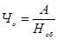
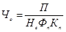
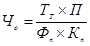
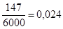
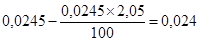
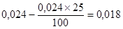
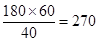
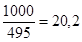
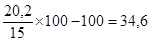
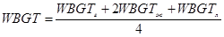

ГОССТРОЙ РОССИИ
Государственное предприятие
Центр научно-методического обеспечения инженерного сопровождения инвестиций в строительстве
ГП «ЦЕНТРИНВЕСТпроект»
ПОСОБИЕ
к СНиП 11-01-95 по разработке
раздела проектной документации «Организация и условия труда работников.
Управление производством и предприятием»
(Переработанное и дополненное издание)
Москва 1997 г.
Переработанное Пособие к СНиП 11-01-95 по разработке раздела проектной документации «Организация и условия труда работников. Управление производством и предприятием» подготовлено взамен изданного в 1996 г. в связи с введением в действие основ Федерального законодательства по улучшению условий охраны труда, нормативных документов и стандартов по безопасности труда. Основные положения документа согласованы с Департаментом развития научно-технической политики и проектно-изыскательских работ Госстроя России, а также главным государственным экспертом условий труда Минтруда Российской Федерации В.Н. Купоровым в феврале 1997 года.
Целью издания Пособия является оказание помощи проектным организациям, предприятиям-заказчикам (инвесторам), органам государственного надзора, экспертизы, органам местного самоуправления (администрациям) и направлено на повышение качества проектных решений по организации и условиям труда, управления производством и предприятием.
Пособие переработано специалистами ГП «ЦЕНТРИНВЕСТ-проект» - к.т.н. Пулико В.И., Родендорф Ю.К., инж. Михайлиным Е.В., Павловой В.А. и специалистами МВП «Трудовик» - засл. экономистом Бегиджановым М.Г., к.т.н. Лагутенок Э.П., к.т.н. Бегиджановой А.П., Подгорных Е.А., Ждановым И.М.
Ответственный за выпуск: Михайлин Е.В. Телефон для справок: 157-31-16
Настоящее пособие к СНиП 11-01-95 «Инструкция о порядке разработки, согласования, утверждения и составе проектной документации на строительство предприятий, зданий и сооружений» предусматривает детализацию состава и содержания раздела «Организация и условия труда работников. Управление производством и предприятием», предусмотренных в Инструкции.
Пособие подготовлено в соответствии с положениями законодательных актов Российской Федерации, требованиями федеральных нормативных документов по проектированию для строительства: СНиП 11-01-95 «Инструкция о порядке разработки, согласования, утверждения и составе проектной документации на строительство предприятий, зданий и сооружений», СП 11-101-95 «Порядок разработки, согласования, утверждения и состав обоснований инвестиций в строительство предприятий, зданий и сооружений» и др. В указанном Пособии учтены также: положения, изложенные в РДС 11-201-95 «Инструкция о порядке проведения государственной экспертизы проектов строительства»; требования нормативных документов Минтруда России, регламентирующих организацию и условия труда работников и систем управления производством; положения постановления Правительства Российской Федерации от 26.08.96 г. № 843 «О мерах по улучшению условий и охраны труда».
I. В соответствии с пунктом 4.8. СП 11-101-95 в предпроектных материалах раздела определяются принципиальные решения:
• по условиям и характеру организации труда на предприятии;
• потребность в трудовых ресурсах по категориям работников (рабочих, руководителей производства, специалистов и технических исполнителей) требования к их квалификации, альтернативные варианты удовлетворения потребности в трудовых ресурсах (привлечение местной рабочей силы, оргнабор, вахтенный метод обслуживания и др.);
• предложения по организации подготовки рабочих кадров;
• вариантные решения, обеспечивающие работников предприятия жильем;
• создание благоприятных социально-бытовых условий проживания;
• в соответствующих случаях приводятся обоснования применения прогрессивных методов управления производством.
Пример расчета численности промышленно-производственного персонала приведен в приложении 1 настоящего Пособия.
II. В соответствии с требованиями пунктов 4.1. и 4.1.4. СНиП 11-01-95 в составе проекта разрабатывается раздел «Организация и условия труда работников. Управление производством и предприятием».
В разделе проекта на основе решений, принятых в обоснованиях инвестиций в строительство, и задания на проектирование прорабатываются:
• организационная структура производства и управления предприятием (при необходимости отдельными производствами), включая информационное, функциональное и техническое обеспечение; решения по механизации и автоматизации труда работников, количеству и оснащенности рабочих мест;
• расчеты численного и профессионально-квалификационного состава работающих; мероприятия, обеспечивающие безопасность и комфортные санитарно-гигиенические условия труда;
• мероприятия по охране труда и технике безопасности, в том числе решения по снижению шумов и вибраций, загазованности помещений, избытка тепла и др.;
• оценка эффективности намечаемых в разделе решений и мероприятий.
Указанные решения и расчеты выполняются в составе раздела в полном объеме по каждому производству, зданию, сооружению, входящих в состав предприятия, и содержат следующие подразделы:
1 - принципиальные решения по организации труда и управления производством;
2 - количество рабочих мест и численность работающих;
3 - организация и оснащение рабочих мест;
4 - обслуживание рабочих мест;
5 - прогрессивные формы организации труда;
6 - режим труда и отдыха;
7 - охрана и условия труда работников;
8 - организация управления производством, предприятием;
9 - подготовка и переподготовка рабочих кадров.
Проектные решения по организации труда и управления предприятием* должны обеспечивать:
_________
* далее в тексте ОТиУ
• наиболее полное использование производственных фондов и трудовых ресурсов;
• внедрение в производство результатов научных исследований, новой техники и прогрессивной технологии;
• высокое качество выполняемых работ и выпускаемой продукции, их конкурентоспособность;
• экономию трудовых ресурсов и на этой основе снижение себестоимости продукции, повышение производительности труда;
• благоприятные и безопасные условия труда, решение комплекса вопросов по развитию сферы социально-бытового обеспечения работников;
• повышение качества проектных решений по ОТиУ и снижение трудозатрат и сроков проектирования.
Принципиальные решения по организации управления процессом выпуска конкурентоспособной продукции разрабатываются в соответствии с предпроектными обоснованиями инвестиций в строительство данного объекта, заданием на проектирование и намечаемыми в проекте прогрессивными технологическими, конструкторскими и строительными решениями, выполненными с учетом достижений науки и техники, при минимальных материальных, трудовых и других затратах и получении максимальной прибыли при реализации продукции.
Количество рабочих мест определяется исходя из необходимости максимального выпуска продукции, с учетом сменности производства, категорий и специализации работающих (рабочие основного производства, ремонтного обслуживания, уборщиков помещений, специалистов, служащих и др.).
В основном производстве количество рабочих мест определяется путем деления объема продукции выпускаемой данным производством на объем продукции получаемый с одного рабочего места, по действующим прогрессивным нормативам или показателям предприятия, принятого в качестве аналога, с учетом коэффициента планируемого роста производительности труда на рабочем месте.
Количество рабочих мест должно соответствовать количеству применяемого оборудования (агрегатов) и зонам обслуживания, при этом необходимо учитывать возможность многостаночного обслуживания. Одновременно определяется количество и удельный вес рабочих мест с тяжелыми и вредными условиями труда, работающие на которых в соответствии с действующим законодательством должны получать льготы и компенсации.
Количество рабочих мест обслуживающего персонала (ремонтных служб и служб связи, охраны, гардеробщиков, уборщиков помещений и др.) определяется в соответствии с устанавливаемыми зонами (постами) обслуживания.
Рабочие места руководителей, специалистов и служащих и их оснащение должны соответствовать действующим нормативам и функциям аппарата управления производством и предприятием.
Определение численного и профессионально-квалификационного состава работающих выполняется с учетом количества рабочих мест, сфер обслуживания, сменности производства, а также условий труда и планируемое подменой на невыходы работающих.
Пример расчета численности работников (кроме руководителей и специалистов системы управления предприятием) приведен в приложении 1 Пособия.
Организация и оснащение рабочих мест и сфер обслуживания осуществляется с учетом их назначения: по квалификации и профессиям, числу работающих, уровню специализации, механизации и автоматизации работ, количеству обслуживаемого оборудования (агрегатов) и др.
При проектировании организации и оснащении рабочих мест следует использовать материалы действующих проектов массового применения, которые должны соответствовать прогрессивным, технологическим, организационным, санитарно-гигиеническим и другим нормативам.
Рабочие места оснащаются организационной оснасткой, при выборе которой необходимо соблюдать следующие требования:
• удобный доступа к органам управления;
• соответствие оснастки ее функциональному назначению;
• удобное размещение применяемой типовой или стандартной оснастки, предметов труда;
• соблюдение требований нормативных, правовых актов по охране труда.
Решения по организации и обслуживанию рабочих мест должны отвечать следующим требованиям:
• соблюдать четкую специализацию исполнителей работ по функциям обслуживания и плановые сроки выполнения работ;
• обеспечивать экономичность, оперативность и надежность обслуживания;
• определять состав служб, подразделений и трудоемкость функций обслуживания;
К функциям обслуживания рабочих мест относятся:
производственно-подготовительная - планирование комплектования заготовок, материалов, комплектующих изделий, обеспечение технической документацией;
инструментальная - планирование, комплектование и выдача инструмента, заточка, восстановление и ремонт инструмента, штампов, технологической оснастки;
наладочная - наладка и подналадка технологического оборудования и оснастки;
энергетическая - обеспечение всеми видами энергии (теплом, газом, электроэнергией, паром, сжатым воздухом и др.);
ремонтная - ремонт оборудования, профилактический осмотр, контроль за соблюдением правил эксплуатации оборудования;
ремонтно-строительная - ремонт зданий и сооружений;
ремонтно-складская и погрузочно-разгрузочная - работы по приемке, размещению и выдаче материалов, заготовок, изделий, инструмента и др., а также доставке на рабочие места, вывоз продукции, изделий и отходов производства;
контрольная - контроль за качеством материалов, сырья, комплектующих изделий и соблюдением технологических требований и качества готовой продукции;
социальное и производственное обслуживание - бытовое обеспечение работников питанием, медицинскими, коммунальными, бытовыми услугами и др. (номенклатура помещений приведена в таблице 1).
Система обслуживания рабочих мест должна обеспечивать:
• сокращение потерь рабочего времени;
• рост производительности труда;
• ритмичную работу участков, производств (цехов) и предприятия в целом.
В соответствии с назначением предприятия и специфическими особенностями производства продукции, при проектировании могут предусматриваться различные формы организации труда. Наиболее распространенной и эффективной является бригадная форма организации труда.
При применении бригадной формы организации труда должны обеспечиваться следующие условия:
• за бригадой закрепляется изготовление определенного вида продукции (узлов, деталей, полуфабрикатов, а в соответствующих случаях услуг);
• организация в бригаде учета производимой продукции (услуг) расхода сырья, материалов, трудовых и энергетических ресурсов;
• закрепление производственной площади, обеспечивающей территориальное единство и удобство обслуживания оборудования;
• обеспечение бесперебойной работы оборудования;
• численность бригады не должна превышать установленную в отрасли норму управляемости в первичных коллективах.
Перечисленные условия должны реализовываться при создании комплексных, специализированных, смежных или сквозных бригад.
Комплексные бригады создаются для выполнения комплекса разнородных, но взаимосвязанных работ, объединяющих рабочих разных профессий.
В специализированную бригаду включаются рабочие одной профессии, выполняющие технологически однородные работы.
Если законченный объем работ выполняется в течении одной смены, то создаются сменные бригады. Сквозные бригады создаются при многосменной работе в случаях, когда выполнение работы (выпуск продукции) бригадой в течении одной смены невозможно.
При применении бригадной формы организации труда проектная документация подраздела должна содержать:
• данные об основных функциях бригады, количестве и её профессионально-квалификационном составе;
• зоны или рабочие места, предназначенные для обслуживания бригадой;
• конечные показатели, оценивающие деятельность бригады.
Если технология производства предусматривает применение однотипного оборудования (станков) целесообразно применение многостаночного обслуживания их одним работником. В соответствующих обоснованных случаях рабочий-многостаночник может совмещать несколько профессий.
В особо сложных условиях создания производства (удаленность объекта от мест проживания работающих, неблагоприятные экологические и санитарно-эпидемиологические условия площадки строительства и др.) наиболее целесообразным и эффективным является вахтовый метод обслуживания объекта.
Рациональное чередование работы с перерывами на отдых следует предусматривать в целях оптимизации напряженности трудовой деятельности. Разработка рациональных режимов труда и отдыха должна выполняться с учетом определения сменности и длительности рабочих смен (неполный рабочий день, гибкие и скользящие графики режима работы), перерывов на отдых и обед с учетом специфики организации производства, половозрастного состава работающих и др.
Длительность и частота труда и отдыха внутри смены устанавливаются в зависимости от характера труда и степени утомляемости рабочих.
Примерный режим труда и отдыха приведен в таблице № 2, а межотраслевые нормативные документы, регламентирующие условия труда в приложении 3.
7.1. Мероприятия по охране труда на каждом рабочем месте предприятия (производства) являются приоритетными и направлены на сохранение здоровья, работоспособности работников, на снижение потерь рабочего времени и, как следствие, на повышение производительности труда.
Указанные мероприятия разрабатываются в соответствии основами законодательства Российской Федерации об охране труда (постановление Правительства России от 26.08.95 г. № 843 «О мерах по улучшению условий и охраны труда»), а также другими нормативно-правовыми актами по охране труда.
Мероприятиями должно предусматриваться обеспечение работников соответствующих профессий специальными одеждой, обувью и другими средствами индивидуальной защиты (по действующим нормам), а также обеспечение надлежащего лечебно-профилактического обслуживания работающих.
7.2. При проектировании производства на каждом рабочем месте должны обеспечиваться благоприятные и безопасные условия труда за счет решений, разрабатываемых с соблюдением положений и требований действующего законодательства Российской Федерации, нормативных и правовых актов по охране труда на производстве, включая требования СНиП 2.09.04-87* «Административные и бытовые здания», а также с учетом гигиенических критериев оценки условий труда, утвержденных Госкомсанэпиднадзором России 12.07.94 г. Р 2.2.013-94, Санитарных норм допустимых уровней шума на рабочих местах № 3223-85.
Санитарно-гигиенические условия труда должны обеспечивать оптимальность микроклимата (температуры, влажности, чистоты воздушной Среды, естественного и искусственного освещения, уровня производственных шумов, вибрации и др.). См. табл. 3, 4, 5 и приложение 3.
Укрупненные нормативы площадей помещений социально-бытового назначения промышленных объектов и работников строительного комплекса определены по номенклатуре семи групп (постановление Госкомтруда СССР от 6.06.89 г. № 175 «О социальных нормативах»):
• санитарно-бытового и коммунального назначения;
• здравоохранения;
• общественного питания;
• торгового и бытового обслуживания;
• культурно-массового назначения;
• производственного назначения;
• прочих видов обслуживания.
Структурные подразделения необходимо проектировать с учетом социальных групп работающих (женщин, подростков, людей с пониженной работоспособностью). При необходимости создаются специальные участки (цехи), в том числе для беременных женщин.
Для создания комфортных условий и повышения производительности труда на производстве, впервые в отечественной практике, разработан МВП «Трудовик» и издан Альбом планировочных элементов и размещения оборудования в помещениях социально-бытового обеспечения работников. В альбом (1 том) вошли планировочные решения гардеробных, душевых, умывальных, туалетов и комнат личной гигиены женщин. Его применение позволяет сократить сроки проектирования и экспертизы проектов. Альбом одобрен Минтрудом Российской Федерации и может применяться при строительстве объектов независимо от назначения, формы собственности и инвестиций.
Допустимые уровни шума, вибраций, инфра- и ультразвука в производственных помещениях, рабочих местах и на территории предприятия определяются в соответствии с санитарными нормами допустимых уровней шума на рабочих местах (утв. Минздрав СССР 12.03.85 № 3223-85).
Уровни технологических вибраций на рабочих местах принимаются по санитарным нормам Минздравом СССР № 3044-84 и ГОСТ 12.1.012-90 ССВТ «Вибрационная безопасность». Общие требования.
В составе проектных материалов должны приводиться мероприятия, исключающие неблагоприятное воздействие на работающих постоянных магнитных электростатических и электромагнитных полей, радиочастот, лазерных излучений.
Психофизиологические условия организации трудовых процессов должны обеспечивать высокую работоспособность за счет:
• ликвидации или сокращения тяжелого физического, ручного труда, применения прогрессивных технологий, оборудования, организации труда;
• ограничения нервно-психических, эмоциональных и зрительных перегрузок (особенно при многостаночном обслуживании оборудования);
• сокращения монотонности при работе на конвейерных линиях, путем введения свободного ритма и регулирования скорости движения конвейера.
Санитарно-бытовые помещения и службы - основные требования к составу объектов и помещений бытового обслуживания работающих (гардеробных, душевых, химчистки, стирки и др.) медицинского обслуживания (здравпунктов, медпунктов, поликлиник и др.), общественного питания, торговли, специального обслуживания (комнаты отдыха, обогрева, психологической разгрузки, спортивные помещения, помещения труда и отдыха женщин в период беременности и др.) предусматриваются в зависимости от группы производственных процессов предприятия, которые определяются их санитарной характеристикой, с учетом общей численности и квалификационного состава работающих, условий производства и степени загрязнения тела и спецодежды работающих.
Основные строительные требования к санитарно-бытовым объектам и помещениям предусмотрены в СНиП 2.09.04-87* «Административные и бытовые здания», а санитарно-гигиенические - по действующим санитарным нормам проектирования.
Оборудование санитарно-бытовых помещений принимается в соответствии с данными, приведенными в таблице 6.
НОМЕНКЛАТУРА
помещений социально-бытового
обеспечения работников предприятия
|
Помещения санитарно-бытового и коммунального назначения |
Помещения здравоохранения |
Помещения общественного питания |
Помещения торгового и бытового обслуживания |
Помещения культурно-массового назначения |
Помещения производственного обучения |
Помещения прочих видов обслуживания |
|
1 |
2 |
3 |
4 |
5 |
6 |
7 |
|
гардеробные душевые умывальные кладовые места для чистки обуви курительные для сушки спецодежды раздаточные спецодежды обогрева охлаждения респираторные прачечные спецодежды склады спецодежды туалеты |
Фельдшерский здравпункт врачебный здравпункт для отдыха фотарий ингаляторий тренажерные залы психологической разгрузки личной гигиены женщины ручные ванны ножные ванны сауны кабинет нарколога |
комната приема . пищи столовая раздаточная столовая заготовочная заготовочное предприятие |
пункты выдачи продовольственных заказов комплексный приемный пункт бытового обслуживания пункт продажи кулинарных изделий |
красные уголки залы собраний |
для теоретических занятий учебные рабочие места профтехучилища |
кабинеты охраны труда общезаводские общественные организации цеховые общественные организации кабинет по руководству спортивными организациями |
Примерный режим труда и отдыха
|
Характеристика работы |
Продолжительность и распределение перерывов |
Содержание отдыха |
|
1 |
2 |
3 |
|
Работы, связанные с незначительными физическими усилиями или умеренным нервным напряжением |
Два перерыва по 5 мин. В течение смены: через 2 часа после начала работы и за 1,5 часа до ее окончания |
Производственная гимнастика 2 раза в день*) |
|
Работы, связанные со средними физическими усилиями или средним нервным напряжением |
Два перерыва по 10 мин. в течение смены: через 2 часа после начала работы и за 1,5 часа до ее окончания |
Производственная гимнастика 2 раза в день по 5 мин. |
|
Работы, не требующие значительных физических усилий, но неблагоприятные по монотонности рабочей позе и темпу работы **) |
Четыре перерыва по 5 мин. в течение смены через каждые 1,5 часа работы |
Производственная гимнастика 2 раза в день, в остальные 2 перерыва - отдых в удобной позе и легкая разминка. |
|
Работы, связанные с большим напряжением при высоком темпе, в неблагоприятных условиях (загрязненность воздуха, вибрация, тепловые излучения) |
Перерыв в течение каждого часа. Из них два перерыва за смену по 10 мин. (один - в первой, другой - 60 второй половине смены), остальные по 3-5 мин. |
Производственная гимнастика 2 раза в день |
|
Работы с очень большими физическими усилиями или при незначительных физических усилиях, но не в благоприятных условиях |
Перерывы по 8-10 мин. в течение каждого часа или три перерыва в течение смены по 15-20 мин. из них два - 80 второй половине смены |
Производственная гимнастика 2 раза в день |
|
Работы, выполняемые в неблагоприятных условиях при высоком темпе и повышенном нервном напряжении**) |
Перерывы по 4-5 мин. в течение каждого получаса |
Производственная гимнастика 2 раза в день |
|
Работы, выполняемые с большими физическими усилиями в особо неблагоприятных условиях |
Перерывы по 12-15 мин. в течение каждого часа работы |
Производственная гимнастика 2 раза в день |
|
Работы, выполняемые в благоприятных условиях, но связанные со значительным напряжением внимания**) |
Перерывы по 5 мин. (один - в середине первой половины дня, два - во второй половине дня) |
Упражнения типа дыхательной гимнастики |
|
Работа со значительным напряжением мышления |
Вводная гимнастика. Пятиминутные паузы с физзарядкой в первой и во второй половине дня |
Упражнения, включающие работу мускулатуры при повышенной нагрузке |
*) Число методистов по производственной гимнастике: 1 - при числе работающих на предприятии до 3000 чел; 2 - до 5000 чел.; 3 - свыше 5000 чел.
**) Для указанных видов работ рекомендуется психологическая разгрузка в спецкомнатах. Для отдыха и психофизиологической разгрузки необходимо предусматривать специальные площадки и помещения в размерах, предусмотренных в СНиП 2.09.04-87х «Административные и бытовые здания».
Оптимальные и допустимые уровни температуры, относительной влажности и скорости движения воздуха в рабочей зоне производственных помещений*)
|
Период года |
Категория работ |
ТЕМПЕРАТУРА С° |
Относительная влажность, % |
Скорость движения, м/с |
||||||
|
оптимальная |
верхняя граница |
нижняя граница |
оптимальная |
допустимая на рабочих местах, постоянных и непостоянных, не более |
оптимальная, не более |
допустимая на рабочих местах, постоянных и непостоянных**) |
||||
|
на рабочих местах |
||||||||||
|
постоянных |
непостоянных |
постоянных |
непостоянных |
|||||||
|
1 |
2 |
3 |
4 |
5 |
6 |
7 |
8 |
9 |
10 |
11 |
|
Холодный |
Легкая - Iа |
22-24 |
25 |
26 |
21 |
18 |
40-60 |
75 |
0,1 |
не более 0,1 |
|
Легкая -Iб |
21-23 |
24 |
25 |
20 |
17 |
40-60 |
75 |
0,1 |
не более 0,2 |
|
|
Средней тяжести - IIа |
18-20 |
23 |
24 |
17 |
15 |
40-60 |
75 |
0,2 |
не более 0,3 |
|
|
Средней тяжести - IIб |
17-19 |
21 |
23 |
15 |
13 |
40-60 |
75 |
0,2 |
не более 0,4 |
|
|
Тяжелая - III |
16-18 |
19 |
20 |
13 |
12 |
40-60 |
75 |
0,3 |
не более 0,5 |
|
|
Теплый |
Легкая - Iа |
23-25 |
28 |
30 |
22 |
20 |
40-60 |
55 при 28° |
0,1 |
0,1-0,2 |
|
Легкая – Iб |
22-24 |
28 |
30 |
21 |
19 |
40-60 |
60 при 27° |
0,2 |
0,1-0,3 |
|
|
Средней тяжести - IIа |
21-23 |
27 |
29 |
18 |
17 |
40-60 |
65 при 26° |
0,3 |
0,1-0,4 |
|
|
Средней тяжести -IIб |
20-22 |
27 |
29 |
16 |
15 |
40-60 |
70 при 25° |
0,3 |
0,1-0,5 |
|
|
Тяжелая -III |
18-20 |
26 |
28 |
15 |
13 |
40-60 |
75 при 24° |
|||
*) ГОСТ 12.1.005-88 ССБТ «Общие санитарно-гигиенические требования к воздуху рабочей зоны».
**) Большая скорость движения воздуха в теплый период года соответствует максимальной температуре воздуха, меньшая - минимальной температуре воздуха. Для промежуточных величин температуры воздуха скорость его движения может быть определена по интерполяции.
Температура ограждающих рабочую зону конструкций, колебания температуры воздуха по вертикали и горизонтали рабочей зоны и в течение рабочей смены
|
№ п/п |
Измеряемый параметр |
Оптимальные значения |
Допустимые значения |
|
1. |
Температура внутренних поверхностей, ограждающих рабочую зону конструкций (стен, пола, потолка) или устройств (экранов и т.п.), а также температура наружных поверхностей технологического оборудования или его ограждающих устройств |
Не должны выходить более чем на 2 °С за пределы оптимальных величин температуры воздуха, установленных в табл. 2 для отдельных категорий работ |
Не должны выходить за пределы допустимых величин температуры воздуха, установленных в табл. 2 для отдельных категорий работ |
|
2. |
Температура воздуха в рабочей зоне, измеренная на разной высоте и в различных участках помещения |
Не должны выходить в течение смены за пределы оптимальных величин, указанных в табл. 2 для отдельных категорий тяжести работ |
Перепад температуры воздуха по высоте рабочей зоны при всех категориях работ до 3 °С. Колебания температуры воздуха по горизонтали в рабочей зоне, а также в течение рабочей смены до 4 °С - при легких работах; до 5 °С - при средней тяжести работах; до 6 °С - при тяжелых работах, при этом абсолютные значения температуры воздуха, измеренной на разной высоте и в различных участках помещений в течение смены, не должны выходить за пределы допустимых значений величин, указанных в табл. 2. |
Допустимая интенсивность теплового облучения на постоянных и непостоянных рабочих местах
|
Источник излучения |
Облучаемая поверхность тела человека, % |
Интенсивность теплового облучения, Вт/м2*) |
Примечание |
|
1 Нагретые поверхности технологического оборудования, осветительных приборов, инсоляций |
50 и более от 25 до 50 не более 25 |
35 70 100 |
При наличии теплового облучения температура воздуха на постоянных рабочих местах и должна превышать указанные в табл. 2 верхние границы оптимальных значений для теплого периода года; на непостоянных - верхние границы допустимых значений для постоянных рабочих мест. |
|
2 Открытые источники (нагретый металл, стекло, открытое пламя и др.) с температурой: |
не более 25 |
При интенсивности теплового облучения 140 Вт/м2 должны использоваться средства индивидуальной защиты, в т.ч. средства защиты лица и глаз |
|
|
1000-4000 (0,76-2,0) мкм |
|||
|
700-1000 (2,0-3,5) мкм |
|||
|
300-700 (3,5-5,5) мкм |
|||
|
35-300 (св. 5,0) мкм |
____________
* Суммарная энергия всех длин волн - интегральный поток оптимального источника излучения.
Оборудование помещений согласно классификации производственных процессов
|
Группа производственных процессов |
Санитарная характеристика производственных процессов (признаки загрязнения тела и спецодежды) |
Расчетное количество человек на |
Тип гардеробных, количество отделений (открытых или в шкафу) на 1 человека |
Специальная обработка
|
|
|
1 душевую сетку |
1 кран |
||||
|
1 |
2 |
3 |
4 |
5 |
6 |
|
1. |
Процессы, вызывающие загрязнение тела и спецодежды веществами 3 и 4 класса опасности: |
||||
|
1а |
вызывающие загрязнение только рук |
25 |
7 |
общие 1 отделение |
|
|
1б |
вызывающие загрязнение тела и спецодежды, удаляемые без применения специальных моющих средств |
15 |
10 |
общие 1 отделение |
|
|
1в |
вызывающие загрязнение тела и спецодежды особо загрязняющими веществами, удаляемые с применением моющих средств |
3 |
20 |
раздельные 2 отделения |
химчистка спецодежды |
|
2. |
Процессы, протекающие при избытке явного тепла или неблагоприятных метеорологических условиях (выходящих за пределы санитарных норм): |
||||
|
2а |
при избытке явного конвекционного тепла |
7 |
20 |
раздельные 2 отделения |
помещения для охлаждения |
|
2б |
при избытке явного лучистого тепла |
3 |
20 |
раздельные 2 отделения |
помещения для охлаждения, полудуши |
|
2в |
связанные с воздействием влаги, вызывающие намокание спецодежды и обуви |
5 |
20 |
раздельные 2 отделения |
сушка спецодежды и обуви |
|
2г |
при температуре воздуха 10 °С и ниже, включая работы на открытом воздухе |
5 |
20 |
раздельные 2 отделения |
помещения для обогревания, сушка спецодежды и обуви |
|
3. |
Процессы, вызывающие загрязнение тела и спецодежды веществами I и II классов опасности, а также веществами, обладающими стойким запахом: |
||||
|
3а |
вызывающие загрязнение, как правило, только рук |
7 |
10 |
общие 2 отделения |
химчистка |
|
3б |
вызывающие загрязнения тела и спецодежды |
3 |
10 |
раздельные 2 отделения |
обезвреживание (в необходимых случаях дезодорация), искусственная вентиляция мест хранения спецодежды |
|
4. |
При производственных процессах с особыми санитарными или технологическими требованиями к качеству продукции требования к организации хранения спецодежды, а также к обработке спецодежды и тела перед началом работы, должны устанавливаться в ведомственных нормах |
||||
Участки (цеха) для трудоустройства женщин в период беременности. В случае, когда заданием на проектирование предприятия (производства) предусмотрена организация цеха или участка СЦ (У)* для работы женщин в период беременности, в проектной документации предусматриваются рабочие места с комплексом вспомогательных помещений (комнаты отдыха и личной гигиены). При этом необходимо руководствоваться перечнями работ и профессий, с которых переводят беременных женщин, приводимыми в отраслевых гигиенических рекомендациях по их рациональному трудоустройству.
__________
* СЦ(У) - специальные цеха или участки для трудоустройства беременных женщин.
Объемно-планировочные и конструктивные решения принимаются с учетом требований СНиП 2.09.02-85* «Производственные здания» и СНиП 2.09.04-87* «Административные и бытовые здания».
Технологические процессы и оборудование, предназначенные для СЦ(У), не должны быть источником повышенных физических, химических, биологических и психофизиологических факторов, приведенных в ГОСТ 12.0.003-74 ССБТ «Классификация опасных и вредных производственных факторов». Параметры производственной среды должны соответствовать оптимальным требованиям, регламентируемым гигиеническими критериями условий труда (утв. Госкомсанэпиднадзора России 12.07.94 Р 2.2.013-94).
При выборе технологических операций следует учитывать, что максимальная разовая масса эпизодически поднимаемого и перемещаемого груза вручную для беременных женщин не должна превышать 3 кг, а прилагаемых усилий - 30Н. При частых (но не более 100 раз в час до 12 недель беременности и не более 50 раз в час при большем сроке) подъемах и перемещениях груза, величина разовой массы не должна превышать 1,2 кг, а усилий - 12Н. Суммарная масса перемещаемого за смену груза не должна превышать 1000 кг при беременности до 12 недель и 500 кг при большем сроке.
Не должны выполняться работы на конвейере с принудительным ритмом и операции, связанные с нервно-эмоциональным напряжением (см.: напряженность труда в гигиенических критериях оценки условий труда).
При проектировании цеха (участка) для работы женщин в период беременности могут использоваться отдельные рекомендации (справочно), приведенные в приложении 3.
Проектирование систем организации управления предприятием (производством) и информации о процессах управления на различных уровнях осуществляется в соответствии с решениями об их создании, принятыми в обоснованиях инвестиций в строительство объектов, других предпроектных материалах, а также договоре и задании на проектирование.
Создание систем процессов управления и информации на предприятии связано с разработкой новых процедур, методов управления, локальных, интегрированных и информационных баз данных, а также методов их разработки.
Принципиальные решения таких систем должны разрабатываться одновременно с проектированием вновь строящихся предприятий (производств) или на действующих предприятиях при их реконструкции и техническом перевооружении.
Указанные принципиальные решения по созданию таких систем должны предусматривать:
• тип (вид) производства;
• организационную структуру управления предприятием (производством);
• численность производственного персонала, состав функций управления и технических средств, программных средств информации;
• цель создания и назначение систем управления и информации;
• состав и структуру основных функций.
В необходимых случаях, для разработки принципиальных решений систем процессов управления и информации целесообразно привлекать специализированные, в этой области, организации.
На основе утвержденных в проекте принципиальных решений управления подготавливается в установленном порядке Техническое задание на выполнение технологической и проектно-конструкторской документации для создания систем управления предприятием.
Современные системы процессов управления предприятием значительно отличаются от прежних АСУ по их возможностям в части реализации функций управления, технологий функционирования, ориентированных непосредственно на управленческий персонал предприятия и базирующихся на выборе широкой номенклатуры технических средств, программных средств, информационных технологий.
Комплекс технических средств систем информации не требует создания специального помещения для вычислительного центра, а его размещение предусматривается в помещениях предприятия с постоянным температурно-влажностным режимом. Отсутствует также необходимость создания специальных подразделений по эксплуатации систем.
Программно-технические средства информации становятся неотъемлемой частью или основой технологии процессов управления предприятием (производством).
В состав проектной документации на создание предприятия включаются:
• решения определяющие перечень и состав подсистем управления и информации;
• основные решения по структуре системы, информационной базе, комплексу технических средств;
• спецификации и перечни оборудования, приводимые на соответствующих чертежах (общая структурная схема управления, схема информационной увязки подсистем, структурная схема (планировка) комплекса технических средств). Указанные разработки выполняются с учетом результатов изучения работы систем предприятий - аналогов, материалов научных исследований и установленных для отрасли требований к уровню автоматизации производства.
Проектируемая производственная структура управления предприятием должна обеспечивать:
• рациональное распределение управленческих функций между структурными подразделениями;
• оперативность управления (кратчайшие сроки прохождения информации, подготовки, принятия и выполнения управленческих функций);
•целесообразную простоту и экономичность системы управления.
Расчет численности руководителей, специалистов и служащих выполняется по отраслевым нормативам численности, по нормам обслуживания и управляемости или аналогия с численностью на передовых отечественных и зарубежных предприятиях. При этом площади рабочих мест служащих должны соответствовать действующим нормам.
Рабочие места руководителей, специалистов и служащих оборудуются в соответствии с принятой специализацией выполняемых работ (функциям) и оснащаются для автоматизированных систем современной организационной и электронно-вычислительной техникой, персональными ЭВМ, оперативной и административно-хозяйственной связью, видеотерминалами и др.
Учитывая то, что часть имеющейся нормативной базы не в полной мере отвечает современному уровню создаваемых систем автоматизации, следует принимать требования ранее изданных нормативных документов лишь в качестве рекомендаций.
Разработка технической и инструктивно-методической документации, связанной с созданием экономико-математических моделей, алгоритмов, программ решения задач по обработке информации, инструкций по эксплуатации систем, классификаторов, информационной базы и др. осуществляется по отдельному договору заказчика специализированной системной организацией.
Перечень рекомендуемых нормативных документов
|
Единая система стандартов автоматизированных систем управления. Автоматизированные системы управления. Общие требования |
|
|
Единая система стандартов автоматизированных систем управления. Типовые проектные решения АСУ. Основные положения. |
|
|
Информационная технология. Комплекс стандартов на автоматизированные системы. Автоматизированные системы. Стадии создания. |
|
|
Информационная технология. Комплекс стандартов на автоматизированные системы. Техническое задание на создание автоматизированной системы. |
|
|
Информационные технологии. Виды испытаний автоматизированных систем. |
Рекомендуемое техническое обеспечение
Компьютеры на рабочих местах:
процессоры от Intel Pentium 75¸100
оперативная память не ниже 8 Мб,
жесткий диск не ниже 510 Мб,
монитор SVGA 15² (SAMSUNG, DAEWOO).
Сетевые решения:
процессор (сервер) Intel Pentium 120,133,
оперативная память от 16 Мб,
жесткий диск от 1 G,
рабочие станции Intel Pentium 75¸100
Наиболее авторитетные фирмы, производящие компьютеры:
IBM, Hewlett-Packard, Compaq, Apple, Асеr.
Принтеры:
матричные: Epson LX-1050, LQ-1070, LQ-1170,
струйные: HPDeskJet 320, 870, 6600, 1200C, Epson Styles-1000,
лазерные: HPLaserJet 4L, 5L, 4Mplus (сетевой), 5Si (сетевой).
Сканеры:
HPScanJet5p, 4s (цветной), Paragon 800 II SP, 1200 SP.
Рекомендуемое программное обеспечение
1. Системные продукты: MS DOS 6.22, Windows 3.11, Windows 95.
2. Системы управления базами данных (СУБД): Fox Pro 2.6, Access 2.0, Paradox 5.0.
3. Текстовые редакторы: MS Word 6.0, WinWord 6.0.
4. Интегрированные пакеты программ для организации труда: Excel 5.0, Lotus, MS Office 4.2, MS Works 3.0.
5. Пакеты автоматизации бухгалтерских работ: 1С: Бухгалтерия 6.0, Инфин-Бухгалтерия, Турбо-Бухгалтер, ИНФО-Бухгалтер и др.
Применение прогрессивных технологий, технологическое автоматизированное оборудование, которым оснащаются современные предприятия (производства), требуют высокого профессионализма рабочих и служащих и своевременной опережающей подготовки рабочих кадров.
Появляются новые профессии и повышаются требования к профессиональной подготовке наладчиков оборудования, операторов-станочников, управленцев и других специальностей. Рабочие и специалисты должны иметь более глубокие знания в области техники, технологии, электроники и др., приближающиеся, по уровню, к инженерным знаниям.
В соответствии с согласованными решениями местной администрацией и заданием на проектирование, в проекте предприятия необходимо предусматривать решения:
• о подготовке новых рабочих кадров;
• переподготовке и обучению рабочих вторым профессиям;
• повышение квалификации рабочих.
Общение и проверка знаний по охране труда работников проводится в соответствии с ГОСТ 12.0.004-90 СCБТ «Организация обучения безопасности труда. Общие положения».
В проекте предприятия (производства) в соответствующих случаях, в зависимости от состава и численности работающих, должны создаваться учебные пункты или профессионально-технические училища по профилю работы предприятия.
Обучение несложным профессиям и периодическое повышение квалификации должны осуществляться непосредственно на предприятии, в предусмотренных для этой цели помещениях.
Строительство специальных объектов для подготовки кадров должно осуществляться, как правило, по повторно используемым проектам или проектам для массового применения.
В соответствии с заданием заказчика, согласованным с местными службами трудоустройства населения, в проектной документации приводятся данные и источники комплектования предприятия рабочими кадрами и специалистами по профилю предприятия.
Определение укрупненных нормативов на основе научно-обоснованных норм труда рекомендуется производить в случаях, когда на стадии проектирования имеются данные о технике, технологии производства и другие, которые необходимы для расчета плановой численности рабочих с помощью нормативов по труду: норм времени, норм обслуживания, нормативов численности.
Расчет численности основных рабочих производится:
а) по нормам обслуживания

А - число обслуживаемых агрегатов (машин), оборудования;
Ноб - норма обслуживания;
б) по нормативам численности
Чо = А ´ Нч, где
А - число обслуживаемых агрегатов (машин), оборудования;
Нч - норматив численности на обслуживание одного агрегата (машины);
а) по нормам выработки (определяются по данным передовых предприятий-аналогов)

П - объем работы в принятых единицах в год;
Нп - норма выработки, ч;
Фп - плановый фонд рабочего времени одного рабочего в год, чел.-ч;
Кп - планируемый коэффициент выполнения норм;
г) по нормированной технологической трудоемкости

Тт - нормированная технологическая трудоемкость единицы продукции, чел.-ч.;
П - объем выпуска продукции в натуральных единицах;
Фп - плановый фонд рабочего времени одного рабочего в год, чел.-ч;
Кп - планируемый коэффициент выполнения норм;
Укрупненные нормативы могут определяться также на основе имеющихся типовых проектов. В них должны вноситься коррективы, вытекающие из изменений в технике, технологии производства, организации труда и управления.
На примере проектирования предприятия цветной металлургии проиллюстрируем порядок расчета численности ППП на стадии разработки предпроектного обоснования инвестиций.
Поставлена задача разработать предпроектное обоснование инвестиций строительства обогатительной фабрики мощностью по переработке сырой руды 10 млн. т/год. Требуется определить при этом укрупненные показатели по труду (численность ППП и уровень производительности труда), характеризующие, наряду с другими технико-экономическими показателями, экономическую целесообразность создания этого нового промышленного объекта. В нашем условном примере расчета в качестве передового действующего предприятия-аналога в качестве базы для сопоставления взяты фактические (за 1986 г.) показатели обогатительной фабрики комбината «Печенганикель»:
• годовой объем производства - 6 млн. т/год (переработка руды);
• общая численность ППП - 403 чел. Из них основных рабочих 147 чел.;
• вспомогательных рабочих - 219 чел.;
• руководителей, специалистов - 37 чел.;
и служащих
• выработка на одного работающего - 15 тыс. т/год
• нормативная численность - 
на 1 тыс. т продукции
Принимаем условно среднегодовой прирост производительности труда за счет внедрения мероприятий в среднем 2,05 %.
Корректировка норматива численности составляет:

Инвестиционный период создания предприятия подобного типа (разработка проектной документации => пуск => освоение мощности и всех технико-экономических показателей => выход на режим нормальной эксплуатации) составляет в среднем 10-11 лет. Следовательно, по завершению этого периода вновь создаваемая обогатительная фабрика при реализации всего комплекса организационно-технических мероприятий, предусмотренных проектом, должна обеспечить уровень производительности труда, как минимум, на 25 % выше чем у предприятия-аналога (из расчета ежегодного планируемого роста производительности труда 2,5 %, или на 25 % за две пятилетки).
Дальнейшая в этой связи корректировка норматива численности дает следующие результаты:

В этом случае укрупненная численность основного технологического персонала исходя из намеченного объема производства составит:
10000 ´ 0,018 = 180 чел.
По статистическим данным за 1987 г. Укрупненная численность вспомогательных рабочих в производствах подобного типа составляет в общей численности рабочих 56-60 %.
За основу берем соотношение в 60 %. Отсюда численность этой категории рабочих составит:

Отсюда общая численность рабочих составит:
180 + 270 = 450 чел.
Исходя из фактических данных по предприятию-аналогу соотношение между численностью специалистов, руководителей и служащих к общему количеству рабочих составляет 10 %.
Если взять это за основу, то расчетная численность руководителей, специалистов и служащих составит в нашем случае 45 чел., а общая численность трудящихся - 495 чел. (450 + 45) и уровень производительности труда

Соответственно рост производительности труда по данным предприятия-аналога составит:

Таким образом, численность ППП предпроектное обосновании инвестиций рассчитана в количестве 495 чел., рост производительности в сравнении с предприятием-аналогом 34,6 %. Полученные трудовые показатели должны войти в качестве контрольных показателей в задание на проектирование строительства фабрики, а при разработке проекта всем комплексом организационно-технических решений могут быть только улучшены. Приведенный нами расчет является условным и носит чисто методический характер.
1. Гигиенические критерии оценки условий труда по показателям вредности и опасности факторов производственной среды, тяжести и напряженности трудового процесса. Утверждены Госкомсанэпиднадзором России 12.07.94, Р 2.2.013-94.
2. Санитарные правила для предприятий цветной металлургии. Утверждены Минздравом СССР 24.08.82, № 2528-82.
3. Правила безопасности при производстве и потреблении продуктов разделения воздуха. Утверждены Госгортехнадзором СССР 12.04.88, ПБПРВ-88.
4. Правила безопасности в газовом хозяйстве. Утверждены Госпроматомнадзором 26.12.90.
5. ГОСТ 12.0.003-74 ССБТ «Опасные и вредные производственные факторы. Классификация».
6. ГОСТ 12.1.002-84 ССБТ «Электрические поля промышленной частоты, допустимые уровни напряженности и требования к проведению контроля на рабочих местах».
7. ГОСТ 12.1.004-91 ССБТ «Пожарная безопасность. Общие требования».
8. ГОСТ 12.1.005-88 ССБТ «Общие санитарно-гигиенические требования к воздуху рабочей зоны».
9. ГОСТ 12.1.006-84 ССБТ «Электромагнитные поля радиочастот. Допустимые уровни на рабочих местах и требования к проведению контроля».
10. ГОСТ 12.1.007-76 ССБТ «Вредные вещества. Классификация и общие требования безопасности».
11. ГОСТ 12.1.008-76 ССБТ «Биологическая безопасность. Общие требования».
12. ГОСТ 12.1.010-76 ССБТ «Взрывобезопасность. Общие требования».
13. ГОСТ 12.1.012-90 ССБТ «Вибрационная безопасность. Общие требования».
14. ГОСТ 12.1.003-83 ССБТ «Шум. Общие требования безопасности». Изм. № 1 от 01.03.89.
15. ГОСТ 12.2.024-87 ССБТ «Шум. Трансформаторы силовые масляные. Нормы и методы контроля».
16. ГОСТ 12.2.022-80 ССБТ «Конвейеры. Общие требования безопасности».
17. ГОСТ 12.3.003-86 ССБТ «Работы электросварочные. Требования безопасности».
18. ГОСТ 12.3.004-75 ССБТ «Термическая обработка металлов. Общие требования безопасности».
19. ГОСТ 12.3.005-75 ССБТ «Работы окрасочные. Общие требования безопасности».
20. ГОСТ 12.3.006-75 ССБТ «Эксплуатация водопроводных и канализационных сооружений и сетей. Общие требования безопасности».
21. ГОСТ 12.4.026-76 ССБТ «Цвета сигнальные и знаки безопасности».
22. Санитарные правила организации технологических процессов и гигиенические требования к производственному оборудованию. Утверждены Минздравом СССР 04.04.73, № 1042-73.
23. ГОСТ 12.2.072-82 ССБТ «Работы промышленные, роботизированные технологические комплексы и участки. Общие требования безопасности».
24. ГОСТ 12.3.002-75 ССБТ «Процессы производственные. Общие требования без опасности».
25. ГОСТ 12.4.012-83 ССБТ «Вибрация. Средства изменения и контроля вибрации на рабочих местах. Технические требования».
26. ГОСТ 12.4.008-84 ССБТ «Средства индивидуальной защиты. Метод определения поля зрения».
1. Санитарно-гигиенические нормы допустимых уровней ионизации воздуха производственных и общественных помещений. Утверждены Минздравом СССР 12.02.80, № 2152.
2. Постановление Совета Министров, Правительства Российской Федерации от 6.02.93, № 105 «О новых нормах предельно допустимых нагрузок для женщин при подъеме и перемещении тяжестей вручную».
3. Методические указания по профилактике неблагоприятного действия локальных вибраций. Утверждены Минздравом СССР 29.08.85, № 3926-85.
4. Гигиенические рекомендации к рациональному трудоустройству беременных женщин. Методические рекомендации. Утверждены Минздравом СССР 29.08.79, № 2049-79.
5. Методические рекомендации по снижению отрицательного воздействия монотонности при конвейерно-поточном производстве. Утверждены Минздравом СССР 04.07.80, № 2181-80.
6. Рекомендации по устранению и предупреждению неблагоприятного влияния монотонности на работоспособность человека в условиях современного производства. Утверждены Минздравом СССР 26.09.80, № 2257-80.
7. СНиП 23-05-95 «Естественное и искусственное освещение».
8. СНиП II-12-77 «Защита от шума».
9. Межотраслевые типовые решения для проектирования систем регламентированного обслуживания производства и организации труда вспомогательных рабочих НИИтруда. Издание 1985 г.
10. Типовое положение об аттестации, рационализации, учете и планировании рабочих мест.
11. Единый тарифно-квалификационный справочник работ и профессий рабочих. Утвержден Госкомтруда СССР и ВЦСПС 30.01.85, № 31/3-30.
12. Тарифно-квалификационные характеристики по общеотраслевым должностям служащих. Утверждены постановлением Минтруда Российской Федерации 10.11.92, № 30.
13. Тарифно-квалификационные характеристики по общеотраслевым профессиям рабочих, которым устанавливаются месячные оклады. Утверждены постановлением Минтруда Российской Федерации 10.11.92, № 31.
14. ГОСТ 12.1.012. ССБТ. Вибрационная безопасность. Общие требования.
15. СП 12-131-95. Безопасность труда в строительстве.
16. РД 2.2.03-94. Гигиенические критерии оценки условий труда по показателям вредности а опасности факторов производственной среды, тяжести и напряженности трудового процесса. Утверждена Госкомсанэпиднадзором России 12.07.94.
17. Справочник межотраслевых нормативных материалов по охране труда и эргономике. Всероссийский центр охраны и производительности труда. Минтруд России. (Материалы в таблицах 1-11).
Таблица 1
Классы условий труда в зависимости от содержания вредных веществ в воздухе рабочей зоны (превышение ПДК, раз)
|
Вредные вещества* |
Класс условий труда |
|||||
|
Допустимый 2 |
Вредный-3 |
Опасный (экстремальный) 4 |
||||
|
1 степени 3.1 |
2 степени 3.2 |
3 степени 3.3 |
4 степени 3.4 |
|||
|
Вредные вещества, за исключением перечисленных ниже |
£ ПДК |
1.1-3 |
3,1-6 |
6,1-10 |
10,1-20 |
> 20 |
|
Вещества с остронаправленным механизмом действия. Вещества раздражающего действия |
£ ПДК |
1,1-2 |
2,1-4 |
4,1-6 |
6,1-10 |
> 10** |
|
Аллергены |
£ ПДК |
1,1-3 |
3,1-10 |
>10 |
||
|
Канцерогены |
£ ПДК |
1,1-3 |
3,1-6 |
6,1-1- |
>10 |
|
|
Аэрозоли преимущественно фиброгенного действия |
£ ПДК |
1,1-2 |
2,1-5 |
5.1-10 |
>10 |
|
|
Противоопухолевые лекарственные средства, гормоны (астрогены)*** |
**** |
|||||
|
Наркотические анальгетики*** |
**** |
|||||
|
Металлы, оксиды металлов |
£ ПДК |
10,1-20 |
20 |
|||
* В соответствии с перечнем «Предельно допустимые концентрации вредных веществ в воздухе рабочей зоны» и дополнениями к нему, ГОСТом 12.1.005 «Общие санитарно-гигиенические требования к воздуху рабочей зоны», «Перечнем веществ, продуктов, производственных процессов и бытовых факторов, канцерогенных для человека».
** Превышение указанного уровня для веществ с остронаправленным механизмом действия может привести к острому смертельному отравлению.
*** Вещества, при работе с которыми должен быть исключен контакт с органами дыхания и кожей при обязательном контроле воздуха рабочей зоны утвержденными методами (в соответствии с перечнем «Предельно допустимые концентрации вредных веществ в воздухе рабочей зоны» и дополнениями к нему).
**** Работа с указанными веществами при их производстве, а также в онкологических диспансерах и подразделениях дает право отнесения условий труда к данному классу.
Таблица 2
Классы условий труда при работе с биологическим фактором
|
Вредные вещества* |
Класс условий труда |
||||||
|
Допустимый 2 |
Вредный-3 |
Опасный (экстремальный) 4 |
|||||
|
1 степени 3.1 |
2 степени 3.2 |
3 степени 3.3 |
4 степени 3.4 |
||||
|
Патогенные |
особо опасные инфекции |
||||||
|
возбудители других инфекционных заболеваний |
|||||||
|
Микроорганизмы-продуценты, препараты, содержащие живые клетки и споры микроорганизмов; (превышение ПДК, раз) |
£ ПДК |
1,1-3 |
3,1-10 |
> 10 |
|||
|
Белковые препараты (превышение ПДК, раз) |
£ ПДК |
- |
1,1-2 |
2,1-10 |
> 10 |
||
* Работа в специализированных медицинских, ветеринарных учреждениях и подразделениях, специализированных хозяйствах для больных животных дает право отнесения условий труда к указанному классу
Таблица 3
Классы условий труда в зависимости от уровня шума и вибрации рабочих мест
|
Фактор |
Класс условий труда |
|||||
|
Допустимый 2 |
Вредный-3 |
Опасный (экстремальный) 4 |
||||
|
1 степени 3.1 |
2 степени 3.2 |
3 степени 3.3 |
4 степени 3.4 |
|||
|
превышение ПДУ до: |
||||||
|
Шум (эквивалентный уровень звука, дБА) |
ПДУ1 |
10 |
25 |
40 |
50 |
> 50 |
|
Вибрация локальная (эквивалентный корректированный уровень виброскорости, дБ)6 |
£ ПДУ2 |
3 |
6 |
9 |
12 |
> 12 |
|
Вибрация общая (эквивалентный корректированный уровень виброскорости, дБ) |
ПДУ3 |
6 |
12 |
18 |
24 |
> 24 |
|
Инфразвук (общий уровень звукового давления, дБ Лин) |
£ ПДУ4 |
> ПДУ |
||||
|
Ультразвук воздушный (уровни звукового давления в 1/3 октавных полосах частот) |
£ ПДУ5 |
> ПДУ |
||||
|
Ультразвук контактный (виброскорость, м/сек; логарифмический уровень виброскорости, дБ; интенсивность, Вт/см2) |
£ ПДУ5 |
> ПДУ |
||||
1 В соответствии с «Санитарными нормами допустимых уровней шума на рабочих местах».
2 В соответствии с «Санитарными нормами и правилами при работе с машинами и оборудованием, создающим локальную вибрацию, передающуюся на руки работающих».
3 В соответствии с «Санитарными нормами вибрации рабочих мест».
4 В соответствии с «Гигиеническими нормами инфразвука на рабочих местах».
5 В соответствии с ГОСТ 12.1.001 ССБТ «Ультразвук. Общие требования безопасности».
6 Сочетание локальной вибрации с охлаждающим микроклиматом и/или статическим напряжением повышает класс условий труда на единицу.
Таблица 4
Классы условий труда при действии электромагнитных излучений (превышение ПДУ, раз)
|
Фактор |
Класс условий труда |
|||||
|
Допустимый 2 |
Вредный-3 |
Опасный (экстремальный) 4 |
||||
|
1 степени 3.1 |
2 степени 3.2 |
3 степени 3.3 |
4 степени 3.4 |
|||
|
Постоянное магнитное поле* |
£ ПДУ |
1,1-3 |
3,1-5 |
5,1-10 |
> 10 |
|
|
Электростатическое поле** |
£ ПДУ |
1,1-3 |
3,1-5 |
5,1-10 |
> 10 |
|
|
Электрические поля промышленной частоты (50 Гц)*** |
£ ПДУ (для всего рабочего дня) |
1,1-3 |
3,1-5 |
5,1-10 |
> 10 |
|
|
Магнитные поля промышленной частоты (50 Гц)**** |
ПДУ (для всего рабочего дня) |
1,1-3 |
3,1-5 |
5,1-10 |
> 10 |
|
|
Электромагнитные излучения радиочастотного диапазона: ***** |
||||||
|
0,01-3 МГц |
£ ПДУ |
1,1-3 |
3,1-5 |
5,1-10 |
> 10 |
|
|
3-30 МГц |
£ ПДУ |
1,1-3 |
3,1-5 |
5,1-10 |
> 10 |
|
|
30-300 МГц |
£ ПДУ |
1,1-3 |
3,1-5 |
5,1-8 |
8,1-10 |
> 10****** |
|
300 Мгц-300 ГГц |
£ ПДУ |
1,1-3 |
3,1-5 |
5,1-8 |
8,1-10 |
> 10****** |
|
Лазерное излучение ******* |
>ПДУ1 |
|||||
|
£ ПДУ1 (для хронического воздействия) |
£ ПДУ2 (для однократного воздействия) |
1,1-3 ПДУ2 |
3,1-6 ПДУ2 |
6,1-10 ПДУ2 |
>10 ПДУ12 |
|
* В соответствии с «Предельно допустимыми уровнями воздействия постоянных магнитных полей при работе с магнитными устройствами и материалами».
** В соответствии с ГОСТ 12.1.045 ССБТ «Электростатические поля. Допустимые уровни на рабочих местах и требования к проведению контроля».
*** В Соответствии с «Санитарными нормами и правилами выполнения работ в условиях воздействия электрических полей промышленной частоты (50 Гц)».
**** В соответствии с «Предельно допустимыми уровнями магнитных полей частотой 50 Гц».
***** В соответствии с ГОСТ 12.1.006 ССБТ «Электромагнитные поля радиочастот. Допустимые уровни на рабочих местах и требования к проведению контроля», «ПДУ воздействия электромагнитных полей диапазона частот 10-60 кГц».
****** Для ПДУ при времени воздействия равному или менее 0,2 часа.
******* В соответствии с «Санитарными нормами и правилами устройства и эксплуатации лазеров».
Примечание.
Для лиц, работающих в экранированных (при снижении естественного электромагнитного поля Земли) и особо чистых помещениях, класс условий труда устанавливают в соответствии с уровнями всех имеющихся факторов среды и трудового процесса, увеличивая на одну ступень степень вредности.
Таблица 5.1
Классы условий труда по показателям микроклимата для производственных помещений и открытых территорий в теплый период года
|
Показатель |
Класс условий труда |
||||||
|
Оптимальный 1 |
Допустимый 2 |
Вредный-3 |
Опасный (экстремальный) 4 |
||||
|
1 степень 3.1 |
2 степень 3.2 |
3 степень 3.3 |
4 степень 3.4 |
||||
|
Температура воздуха, °С |
по СН* |
по СН* |
по показателю WBGT - индекса, см. Табл. 5.1.1 |
||||
|
Скорость движения воздуха, м/с |
то же |
то же |
то же |
||||
|
Влажность воздуха, % |
то же |
то же |
то же |
||||
|
Тепловое излучение, Вт/м2 |
то же |
то же |
1201-1500 |
1501-2000 |
2001-2500 |
2501-3500 |
> 3500 |
* «Санитарные нормы микроклимата производственных помещений».
Таблица 5.1.1
Классы условий труда по показателю WBGT - индекса для производственных помещений и открытых территорий в теплый период года (°С)
|
Категория |
Общие |
Класс условий труда |
||||||
|
Оптимальный 1 |
Допустимый 2 |
Вредный-3 |
Опасный 4 |
|||||
|
1 степень 3.1 |
2 степень 3.2 |
3 степень 3.3 |
4 степень 3.4 |
|||||
|
Iа |
68 (58-77) |
21,0-23,4 |
23,5-25,4 |
25,5-26,6 |
26,7-27,4 |
27,5-28,6 |
28,7-31,0 |
> 31,0 |
|
Iб |
88 (78-97) |
20,2-22,8 |
22,9-25,8 |
25,9-26,1 |
26,2-26,9 |
27,0-27,9 |
28,0-30,3 |
> 30,3 |
|
IIа |
113 (98-129) |
19,2-21.9 |
22,0-25,1 |
25,2-25,5 |
25,6-26,2 |
26,3-27,3 |
27,4-29,9 |
> 29,9 |
|
IIб |
145 (130-160) |
18,2-20,9 |
21,0-23,9 |
24,0-24,2 |
24,3-25,0 |
25,1-26,4 |
26,5-29,1 |
> 29,1 |
|
III |
177 (161-193) |
17,0-18,9 |
19,0-21,8 |
21,9-22,2 |
72,3-23,4 |
23,5-25,7 |
25,8-27,9 |
> 27,9 |
* по ГОСТ ССБТ «Общие санитарно-гигиенические требования к воздуху рабочей зоны».
Таблица 5.2
Классы условий труда по показателям микроклимата для производственных помещений в холодный период года
|
Показатель микроклимата |
Класс условий труда |
|||||||
|
Оптимальный 1 |
Допустимый 2 |
Вредный-3 |
Опасный (экстремальный) 4 |
|||||
|
1 степень 3.1 |
2 степень 3.2 |
3 степень 3.3 |
4 степень 3.4 |
|||||
|
Температура воздуха, С° (нижняя граница) |
||||||||
|
категория работ* |
Общие энергозатраты, Вт/м2 |
|||||||
|
Iа |
58-77 |
по СН** |
по СН** |
18-20 |
16-18 |
14-16 |
12-14 |
|
|
Iб |
78-97 |
то же |
то же |
17-19 |
15-17 |
13-15 |
11-13 |
|
|
IIа |
98-120 |
то же |
то же |
14-16 |
12-14 |
10-12 |
8-10 |
|
|
IIб |
130-160 |
то же |
то же |
13-15 |
11-13 |
9-11 |
7-9 |
|
|
III |
161-193 |
то же |
то же |
12-14 |
10-12 |
8-10 |
6-8 |
|
|
Влажность воздуха, % |
то же |
то же |
Требования отсутствуют, см. Примечание |
|||||
|
Скорость движения воздуха, м/с |
то же |
то же |
||||||
* по ГОСТ 12.1.005 «Общие санитарно-гигиенические требования к воздуху рабочей зоны».
** «Санитарные нормы микроклимата производственных помещений».
Примечание.
При увеличении скорости движения воздуха на 0,1 м/с от оптимальной по СН, температура воздуха должна быть увеличена на 0,2 °С.
Таблица 5.3
Классы условий труда по показателям микроклимата для открытых территорий в холодный период года (зима) и в холодных помещениях*
|
Показатель |
Класс условий труда |
|||||
|
Допустимый |
Вредный (нижняя граница)** |
Опасный (экстремальный) 4 |
||||
|
1 степень 3.1 |
2 степень 3.2 |
3 степень 3.3 |
4 степень 3.4 |
|||
|
Температура воздуха, °С*** |
||||||
|
Климатические зоны |
||||||
|
Iа |
-30,0 |
-36,0 |
-38,5 |
-40,8 |
-60 |
< -60 |
|
Iб |
-38,0 |
-46,2 |
-48,9 |
-54,4 |
-70 |
< -70 |
|
II |
-23,0 |
-29,4 |
-31,5 |
-35,7 |
-48 |
< -48 |
|
III |
-15,9 |
-21,3 |
-23,0 |
-26,0 |
-37 |
< -37 |
* При использовании одежды с соответствующей теплоизоляцией (J, °С, м/Вт: 0,71 (Iа); 0,82 (I6); 0,61 (II); 0,51 (III).
** Приведенные значения температуры воздуха применительно к разным классам не исключают регламентацию времени пребывания в неблагоприятном микроклимате (суммарное за рабочее время и непрерывное).
*** Указанная температура относительно спокойного воздуха: при ветре она должна быть увеличена на 2,2 °С на каждый 1 м/с. При температуре воздуха -50 °С и ниже обязательна защита органов дыхания.
Таблица 6
Классы условий труда в зависимости от параметров световой среды производственных помещений (для постоянных рабочих мест)
|
Показатель |
Класс условий труда |
|||||
|
Допустимый |
Вредный (нижняя граница)** |
Опасный (экстремальный) 4 |
||||
|
1 степень 3.1 |
2 степень 3.2 |
3 степень 3.3 |
4 степень 3.4 |
|||
|
Естественное освещение (КЕО, %) |
норма1 |
недостаточное |
отсутствует |
|||
|
Освещенность рабочей поверхности (Е, лк) |
норма1 |
0,5 Ен - Ен2 |
< 0,5 Ен |
|||
|
Слепящая блесткость источников света (показатель ослепленности, Р, отн. ед.) |
норма1 |
Р > Р3н |
||||
|
Отраженная слепящая блесткость |
отсутствие |
наличие |
||||
|
Пульсация освещенности (коэффициент пульсации, Кп, %) |
норма1 |
Кп > Кпн4 |
||||
|
Ультрафиолетовая радиация (облученность, Еуф, Вт/м2) |
норма5 |
Еуф > Еуфн6 |
||||
1 В соответствии с «Санитарными нормами и правилами 11-4. Строительные нормы и правила. Часть II. Нормы проектирования. Естественное и искусственное освещение».
2 Ен - нормированное значение освещенности.
3 Рн - нормированный показатель освещенности.
4 Кпн - нормированное значение коэффициента пульсации.
5 В соответствии с «Санитарными нормами ультрафиолетового излучения в производственных помещениях».
6 Еуф - нормированное значение ультрафиолетовой облученности.
Таблица 7
Классы условий труда по показателям тяжести трудового процесса
|
№№ |
Показатели тяжести трудового процесса |
Класс условий труда |
||||
|
Оптимальный 1 |
Допустимый 2 |
Вредный (тяжелый труд) |
||||
|
1 степени 3.1 |
2 степени 3.2 |
3 степени 3.3 |
||||
|
1. |
Физическая динамическая нагрузка, выраженная в единицах внешней механической работы за смену, кг. м. |
|||||
|
1.1. |
При региональной нагрузке (с преимущественным участием мышц рук и плечевого пояса) при перемещении груза на расстояние до 1 м: |
|||||
|
для мужчин |
до 2500 |
до 5000 |
до 7000 |
до 9000 |
более 9000 |
|
|
для женщин |
до 1500 |
до 3000 |
до 4000 |
до 5500 |
более 5500 |
|
|
1.2. |
При общей нагрузке (с участием мышц рук, корпуса, ног): - при перемещении груза на расстояние от 1 до 5 м |
|||||
|
для мужчин |
до 12500 |
до 25000 |
до 35000 |
до 45000 |
более 45000 |
|
|
для женщин |
до 7500 |
до 15000 |
до 25000 |
до 27000 |
более 27000 |
|
|
- при перемещении груза на расстояние более 5 м |
1 |
|||||
|
для мужчин |
до 24000 |
до 46000 |
до 70000 |
до 90000 |
более 90000 |
|
|
для женщин |
до 14000 |
до 28000 |
до 40000 |
до 55000 |
более 55000 |
|
|
2. |
Масса поднимаемого и перемещаемого груза вручную, кг |
|||||
|
2.1. |
Подъем и перемещение (разовое) тяжестей при чередовании с другой работой (до двух раз в час) |
|||||
|
для мужчин |
до 15 |
до 30 |
более 30 |
|||
|
для женщин |
до 5 |
до 10 |
более 10 |
|||
|
2.2 |
Подъем и перемещение (разовое) тяжестей постоянно в течение рабочей смены |
/ |
||||
|
для мужчин |
до 5 |
до 15 |
до 30 |
более 30 |
||
|
для женщин |
до 3 |
до 7 |
более 7 |
|||
|
2.3. |
Суммарная масса грузов, перемещаемых в течение каждого часа смены |
|||||
|
- с рабочей поверхности |
||||||
|
для мужчин |
- |
до 870 |
более 870 |
|||
|
для женщин |
- |
до 350 |
более 350 |
|||
|
- с пола |
||||||
|
для мужчин |
- |
до 435 |
более 435 |
|||
|
дм женщин |
- |
до 175 |
более 175 |
|||
|
3. |
Стереотипные рабочие движения (кол-во за смену) |
|||||
|
3.1. |
При локальной нагрузке (с участием мышц кистей и пальцев рук) |
до 20000 |
до 40000 |
до 60000 |
более 60000 |
|
|
При региональной нагрузке (при работе с преимущественным участием мышц рук плечевого пояса) |
до 10000 |
до 20000 |
до 30000 |
более 30000 |
||
|
4. |
Статическая нагрузка* Величина статической нагрузки за смену при удержании груза, приложении усилий, кг-с |
|||||
|
- одной рукой |
до 18000 |
до 36000 |
до 70000 |
более 70000 |
||
|
- двумя руками |
до 36000 |
до 70000 |
до 140000 |
более 140000 |
||
|
- с участием мышц корпуса и ног |
до 43000 |
до 100000 |
до 200000 |
более 200000 |
||
|
5. |
Рабочая поза |
Свободная. удобная поза (смена позы «сидя-стоя» по усмотрению работника) |
Периодическое нахождение в неудобной, фиксированной позе (невозможность изменения взаимного положения различных частей тела относительно друг друга) до 25 % времени смены |
Периодическое нахождение в неудобной, фиксированной позе до 50 % времени смены; пребывание в вынужденной позе (на коленях, на корточках и т.п.) до 25 % времени смены |
Нахождение в неудобной, фиксированной позе более 50 % времени смены; пребывание в вынужденной позе (на коленях, на корточках и т.п.) до 25 % времени смены |
|
|
6. |
Наклоны корпуса (кол-во) за смену |
до 50 раз за смену |
Вынужденные наклоны под углом более 30° 51-100 раз за смену |
Вынужденные наклоны под углом более 30° 101-300 раз за смену |
Вынужденные наклоны под углом более 30° свыше 300 раз за смену |
|
|
7. |
Перемещение в пространстве (переходы, обусловленные технологическим процессом в течение смены), км |
до 4 |
до 10 |
до 15 |
более 15 |
|
* только для мужчин; для женщин следует принимать значения на 40 % ниже указанных.
Таблица 8
Классы условий труда по показателям напряженности трудового процесса
|
№№ п/п |
Показатели тяжести трудового процесса |
Класс условий труда |
||||
|
Оптимальный - напряженность труда легкой степени 1 |
Допустимый - напряженность труда средней степени 2 |
Напряженный труд |
||||
|
1 степени 3.1 |
2 степени 3.2 |
3 степени 3.3 |
||||
|
1. |
Интеллектуальные нагрузки: |
|||||
|
1.1. |
Содержание работы |
Отсутствует необходимость принятия решения |
Решение простых альтернативных задач по инструкции |
Решение сложных задач с выбором по известным алгоритмам (работа по серии инструкций) |
Эвристическая (творческая) деятельность, требующая решения сложных задач при отсутствии алгоритма |
|
|
1.2. |
Восприятие сигналов (информации) и их оценка |
восприятие сигналов, не требующее коррекции действий |
Восприятие сигналов с последующей коррекцией действий и операций |
Восприятие сигналов с последующим сопоставлением фактических значений параметров с их номинальными значениями. Заключительная оценка фактических значений параметров |
Восприятие сигналов с последующей комплексной оценкой взаимосвязанных параметров. Комплексная оценка всей производственной деятельности |
|
|
1.3. |
Степень сложности задания |
Обработка и выполнение задания |
Обработка, выполнение задания и его проверка |
Обработка, проверка и контроль за выполнением задания |
Контроль и предварительная работа по распределению заданий другим лицам |
|
|
1.4. |
Характер выполняемой работы |
Работа по индивидуальному плану |
Работа по установленному графику с возможной его коррекцией по ходу деятельности |
Работа в условиях дефицита времени |
Работа в условиях дефицита времени и информации с повышенной ответственностью за конечный результат |
|
|
2. |
Сенсорные нагрузки |
|||||
|
2.1. |
Длительность сосредоточенного наблюдения (в % от времени смены) |
до 25 % |
26-50 % |
51-75 % |
более 75 % |
|
|
2.2. |
Плотность сигналов (световых, звуковых) и сообщений в среднем за 1 час работы |
до 75 |
75-175 |
176-300 |
более 300 |
|
|
2.3. |
Число производственных объектов одновременного наблюдения |
до 5 |
6-10 |
11-25 |
более 25 |
|
|
2.4. |
Нагрузка на зрительный анализатор |
|||||
|
2.4.1 |
Размер объекта различения (при расстоянии от глаз работающего до объекта различения не более 0,5 м) в мм, при длительности сосредоточенного наблюдения (% времени смены) |
более 5 мм |
5-1,1 мм более 50 % времени; 1-0,3 мм до 50 % времени; менее 0,3 мм до 25 % времени |
1-0,3 мм более 50 % времени; менее 0,3 мм 25-30 % времени |
менее 0,3 мм более 50 % времени |
|
|
3.4.2 |
Работа с оптическими приборами (микроскопы, лупы и т.п.) при длительности сосредоточенного наблюдения (% времени смены) |
25 % |
26-50 % |
51-75 % |
более 75 % |
|
|
2.4.3 |
Наблюдение за экранами видеотерминалов (часов в смену) |
до 2 |
2-3 |
3 |
более 4 |
|
|
2.5. |
Нагрузка на слуховой анализатор (при производственной необходимости восприятия речи или дифференцированных сигналов) |
Разборчивость слов и сигналов от 100 % до 90 % н |
Разборчивость слов и сигналов от 90 % до 70 % |
Разборчивость слов и сигналов от 70 % до 50 % |
Разборчивость слов и сигналов менее 50 % |
|
|
3. |
Эмоциональные нагрузки |
|||||
|
3.1. |
Степень ответственности. Значимость ошибки |
Несет ответственность за выполнение отдельных элементов задачи. Влечет за собой дополнительные усилия в работе со стороны работника |
Несет ответственность за функциональное качество вспомогательных работ (заданий). Влечет за собой дополнительные усилия со стороны вышестоящего руководства (бригадира, мастера и т.п.) |
Несет ответственность за функциональное качество основной работы (задания). Влечет за собой исправления за счет дополнительных усилий всего коллектива (группы, бригады и т.п.) |
Несет ответственность за функциональное качество окончательной (конечной продукции) работы (задания). Влечет за собой повреждение оборудования, остановку технологического процесса и возникает возможность опасности для жизни |
|
|
3.2. |
Степень риска для собственной жизни |
Исключена |
- |
- |
Вероятна |
|
|
3.3. |
Степень риска за безопасность других лиц |
Исключена |
Возможна |
|||
|
4. |
Монотонность нагрузок |
|||||
|
4.1. |
Число элементов (приемов), необходимых для реализации простого задания или в многократно повторяющихся операциях |
более 10 |
9-6 |
5-3 |
менее 3 |
|
|
4.2. |
Продолжительность (в сек.) выполнения простых производственных заданий или повторяющихся операций |
более 100 |
100-25 |
24-10 |
менее 10 |
|
|
5. |
Режим работы |
|||||
|
5.1. |
Фактически продолжительность рабочего дня |
6-7 часов |
8-9 часов |
10-12 часов |
более 12 часов |
|
|
5.2. |
Сменность работы |
односменная работа (без ночной смены) |
двухсменная работа (без ночной смены) |
трехсменная работа (работа в ночную смену) |
нерегулярная сменность с работой в ночное время |
|
Таблица 9
Классы условий труда при действии ионизирующих излучений
(в частях от ПДД)*
|
Класс условий труда |
||||||
|
Оптимальный 1 |
Допустимый 2 |
Вредный - 3 |
Опасный 4 |
|||
|
1 степени 3.1 |
2 степени 3.2 |
3 степени 3.3 |
4 степени 3.4 |
|||
|
0,1 |
0,11-0,2 |
0,21-0,5 |
0,51-1,0 |
>1 |
||
* В соответствии с Нормами радиационной безопасности ПДД - основной дозовый предел для категории А облучаемых лиц, т.е. лиц, которые постоянно или временно работают непосредственно с источниками ионизирующих излучений. ПДД гарантирует предупреждение возникновения детерминированных эффектов (лучевая болезнь, лучевая катаракта и др.), но остается высокий риск возникновения злокачественных новообразований и обусловленное этим сокращение продолжительности жизни.
4. ПОЯСНЕНИЯ К ТАБЛИЦАМ
4.1. Классы условий труда в зависимости от содержания вредных веществ в воздухе рабочей зоны (пояснение к таблице 1)
4.1.1. Степень вредности условий труда устанавливается по максимальным концентрациям вредных веществ, а также по среднесменным - при наличии соответствующего норматива.
4.1.2. В течение смены продолжительность действия на работающего концентрации, равной максимально разовой ПДК, не должна превышать 15 минут для химических веществ и 30 минут - для аэрозолей преимущественно фиброгенного действия и она может повторяться не чаще 4 раз в смену.
4.1.3. При одновременном присутствии в воздухе рабочей зоны нескольких вредных веществ однонаправленного действия исходят из расчета суммы отношений фактических концентраций каждого из них к их ПДК, которую принимают за единицу.
4.1.4. Оценку условий труда при одновременном содержании в воздухе рабочей зоны двух и более вредных веществ разнонаправленного действия проводят следующим образом:
• по наиболее высокому классу и степени вредности:
• наличие любого числа веществ класса 3.1 не увеличивает степень вредности условий труда;
• три и более веществ класса 3.2 переводит условия труда в следующую степень вредности - 3.3:
• два и более вредных веществ класса 3.3 переводит условие труда в класс 3.4. Аналогичным образом осуществляется перевод из класса 3.4 в 4-й класс опасных условий труда.
4.1.5. Если одно вещество имеет несколько специфических эффектов (канцероген, аллерген, вещество с остронаправленным механизмом действия) оценка условий труда проводится по более жесткой градации.
4.2. Классы условий труда по показателям микроклимата (пояснение к табл. 5.1-5.3)
4.2.1. Для оценки оптимального и нагревающего микроклимата в помещении и на открытой территории используется интегральный показатель WBGT - индекс (международный стандарт ISO 7243 (таблица 5.1.1).
4.2.2. Нагревающий микроклимат - сочетание параметров микроклимата, при котором имеет место нарушение теплообмена человека с окружающей средой, проявляющееся в накоплении тесла в организме и/или в увеличении доли потерь тепла испарением пота (30 %) в общей структуре теплового баланса.
4.2.3. WBGT - индекс - эмпирический интегральный показатель, отражающий сочетательное влияние температуры воздуха, скорости его движения, влажности и теплового излучения на теплообмен с окружающей средой.
4.2.4. В табл. 5.1.1 приведены величины WBGT применительно к человеку, одетому в комплекс легкой летней одежды с теплоизоляцией 0,5-0,6 кло, подвергающегося действию теплового излучения 1200 Вт/м2 и скорости движения воздуха £ 0,6 м/с (1 кло = 0,155 °С×м2/Вт).
4.2.5. Для оценки оптимального и верхней границы допустимого микроклимата (табл. 5.1) могут быть использованы как отдельные его составляющие согласно санитарным нормам микроклимата производственных помещений, так и индекс WBGT в диапазоне параметров, указанных в п. 4.2.4.
4.2.6. Тепловое излучение, превышающее 1200 Вт/м2, характеризующие условия труда как вредные и опасные вне зависимости от величины WBGT - индекса (табл. 5.1).
4.2.7. Класс вредности и опасности условий труда определяется по наиболее выраженному показателю (WBGT - индекс или тепловое излучение) (табл. 5.1 и 5.1.1). При воздействии на работающих двух факторов одной степени условия труда переводят в следующую степень вредности.
4.2.8. Для обеспечения среднесменного термического напряжения работающих на допустимом уровне суммарная продолжительность их деятельности в течение рабочей смены должна составлять 7, 5, 3 и 1 час соответственно 1-4 степеням вредности условий труда. Указанное не исключает применение спецодежды согласно ГОСТ ССБТ 12.4.176-89 (СТ СЭВ 6350-88), ГОСТ ССБТ 12.4.016-87 и использование средств коллективной защиты от инфракрасных излучений ГОСТ ССБТ 12.4.123-83.
4.2.9. При работе на открытой территории в теплый период года для оценки условий труда следует ориентироваться параметры микроклимата, приведенные в п. 4.2.7.
4.2.10. Охлаждающий микроклимат - сочетание параметров микроклимата, при котором имеет место изменение теплообмена организма (превышение общей теплоотдачи организма в окружающую среду), приводящее к образованию общего или локального дефицита тепла в организме за счет снижения температуры «ядра» и/или «оболочки» тела (температура «ядра» и «оболочки» тела - соответственно температура глубоких и поверхностных слоев тканей организма).
4.2.11. При работе в помещениях с охлаждающим микроклиматом (табл. 5.2-5.3) работающие должны быть снабжены комплектом одежды, изготовленной в соответствии с требованиями ГОСТ ССБТ 12.4.084-80 и 12.4.088-80. С этой целью могут быть использованы также локальные источники тепла направленные на сохранения должного уровня общего и локального теплообмена организма.
Применение одежды не исключает соблюдение должной регламентации времени работы в неблагоприятной среде, а также общего режима труда, утвержденного соответствующим предприятием и согласованного центрами санэпиднадзора.
4.2.12. Параметры температуры воздуха, характеризующие условия труда на открытой территории в различных климатических зонах (поясах) в зимний период (табл. 5.3), приведены применительно к относительно спокойному воздуху, одетым в спецодежду, изготовленную согласно ГОСТ ССБТ 12.4.084-80 и 12.4.088-80 с учетом выполнения работы средней тяжести и соответствующей регламентации времени непрерывного пребывания в охлаждающей среде. При воздействии ветра регламентируемая температура воздуха должна быть увеличена на 2,2 °С на каждый 1 м/с увеличения его скорости.
7243 «Высокотемпературные условия - оценка тепловой нагрузки до индексу WBGT (температура влажного и шарового термометра)».
ГОСТ ССБТ 12.4.176-89 «Одежда специальная для защиты от теплового излучения. Требования к защитным свойствам и метод определения теплового состояния человека».
ГОСТ ССБТ 12.4.016-87 «Костюмы мужские от защиты повышенных температур и теплового излучения. Технические условия».
ГОСТ ССБТ 12.4.123-83 «Средства коллективной защиты от инфракрасных излучений. Общие технические требования».
ГОСТ ССБТ 12.4.084-80 «Одежда специальная для защиты от пониженных температур. Костюмы мужские. Технические условия».
ГОСТ ССБТ 12.4.088-80 «Костюмы женские для защиты от пониженных температур. Технические условия».
4.3. Определение WBGT - индекса (пояснение к табл. 5.1.1)
4.3.1. Температурный индекс WBGT - эмпирический показатель, определяемый на основе показаний влажного и сухого термометров, размещаемых соответственно в естественных условиях и внутри зачерненного шара (шаровой термометр)1. Метод основан на оценке внешней тепловой нагрузки на организм человека с учетом сочетанного действия составляющих микроклимата - температуры, интенсивности теплового облучения, а также уровня метаболизма.
___________
1 В стандарте ISO 7243 приведены технические требования к датчикам и к зачерненному шару.
4.3.2. WBGT -индекс рассчитывают из уравнения:
• вне помещения при солнечной нагрузке (или в помещении при тепловом излучении):
WBGT = 0,7×tвл + 0,1×tc + 0,2tш;
• внутри помещения (при отсутствии теплового излучения) или снаружи без солнечной нагрузки:
WBGT = 0,7×tвл + 0,3tш, где
tвл, tc и tш - соответственно температура влажного, сухого и шарового термометров.
4.3.3. Если параметры окружающей среды различаются в пространстве, то индекс WBGT рекомендуется определять на уровне головы (г), живота (ж) и лодыжек (л):

4.3.4. Для быстрого определения индекса WBGT достаточно одно измерение в точке максимального теплового воздействия. Если значение того или иного параметра, входящего в расчет WBGT, не постоянны во времени, определяется его среднесменная величина.
4.3.5. Приведенные нормативные величины WBGT обеспечивают различные уровни теплового состояния (оптимальное, допустимое, предельно допустимое с учетом продолжительности воздействия) согласно методическим рекомендациям Минздрава № 5168-90 («Оценка теплового состояния человека с целью обоснования гигиенических требований к микроклимату рабочих мест и мерам профилактики охлаждения и перегревания»).
4.4. Классы условий труда по показателям тяжести трудового процесса (пояснение к табл. 7).
4.4.1. Оценка тяжести физического труда приводится на основе учета всех приведенных в таблице 7 показателей. При этом в начале следует определить класс по каждому измеренному показателю, а окончательная оценка тяжести труда устанавливается по наиболее чувствительному показателю, получившему наивысший класс. При наличии 3-х и более показателей, относящихся ко 2-му (допустимому) классу, тяжесть труда оценивается на одну ступень выше (класс 3.1). При наличии 2-х или более показателей 1-ой либо 2-ой степени 3-го класса вредности тяжесть труда оценивается на одну ступень выше (соответственно 3.2 и 3.3 классы).
4.5. Классы условий труда по показателям напряженности трудового процесса (пояснение к табл. 8)
4.5.1. Оценка напряженности труда основана на анализе трудовой деятельности и ее структуры, которые изучаются путем хронометражных наблюдений в течение всего рабочего дня, недели и т. д. Анализ основан на учете всего комплекса производственных факторов (стимулов, раздражителей), создающих предпосылки для возникновения неблагоприятных нервно-эмоциональных состояний (перенапряжения).
Общая оценка напряженности трудового процесса (на основании учета числа показателей напряженности)
|
Классы условий труда |
Общая оценка напряженности трудового процесса - класс условий труда по напряженности |
||||
|
Оптимальный (напряженность труда легкой степени) 1 |
Допустимый (напряженность труда средней степени) 2 |
Вредный (напряженный труд) 3 |
|||
|
1 степени 3.1 |
2 степени 3.2 |
3 степени 3.3 |
|||
|
£ 10 |
³ 6 |
- |
- |
- |
2 |
|
1 и 2 кл. £ 10 |
³ 6 |
- |
- |
3.1 |
|
|
1 и 2 кл. = 10 |
5 |
1 |
- |
3.1 |
|
|
1 и 2 кл. = 10 |
4 |
2 |
- |
3.1 |
|
|
1 и 2 кл. = 10 |
3 |
3 |
- |
3.1 |
|
|
1 и 2 кл. = 10 |
2 |
4 |
- |
3.1 |
|
|
1 и 2 кл. = 10 |
1 |
5 |
- |
3.1 |
|
|
1, 2, 3.1 кл. = 10 |
6 |
- |
3.2 |
||
|
1, 2, 3.1 кл. £ 9 |
³ 7 |
- |
3.3 |
||
4.5.2. Окончательная оценка класса напряженности труда осуществляется с учетом всех указанных в табл. 8 показателей (16 показателей) и в соответствии с таблицей 10.
4.6. Общая оценка условий труда
4.6.1. Оценка условий труда с учетом комбинированного и сочетаемого действия производственных факторов проводится следующим образом.
На основании результатов измерений оценивают условия труда для отдельных факторов в соответствии с таблицами 1-8 и требованиями разделов 4.1-4.5. Результаты вносят в таблицу 11. Общая оценка условий труда по степени вредности и опасности устанавливается:
• по наиболее высокому классу и степени вредности;
• в случае если три и более факторов относятся к классу 3.1, то общая оценка условий труда соответствует классу 3.2;
• при наличии двух и более факторов классов 3.2, 3.3, 3.4 условия труда оцениваются соответственно на одну степень выше.
4.6.2. При сокращении времени контакта с вредными факторами (защита временем) условия труда могут быть оценены как менее вредные, но не ниже класса 3.1.
Оценка условий труда по степени вредности и опасности
|
Фактор |
Классы условий труда |
|||||||
|
1 класс оптимальный |
2 класс допустимый |
3 класс - вредный |
4 класс опасный |
|||||
|
1 степени 3.1 |
2 степени 3.2 |
3 степени 3.3 |
4 степени 3.3 |
|||||
|
Химический |
||||||||
|
Биологический |
||||||||
|
Физический |
Аэрозоли-ф* |
|||||||
|
Шум |
||||||||
|
Вибрация лок. |
||||||||
|
Вибрация общ. |
||||||||
|
Инфразвук |
||||||||
|
Ультразвук |
||||||||
|
ЭМИ** |
||||||||
|
Иониз. изл. |
||||||||
|
Микроклимат |
||||||||
|
Освещенность |
||||||||
|
Тяжесть труда |
||||||||
|
Напряженность труда |
||||||||
|
Общая оценка условий труда |
||||||||
* преимущественно фиброгенного действия;
** электромагнитные излучения.
|
УТВЕРЖДАЮ Заместитель Председателя Государственного комитета СССР по труду и социальным вопросам
Б.Н. Гаврилов |
УТВЕРЖДАЮ Заместитель Председателя Государственного комитета СССР по науке и технике
Л.Н. Ефремов |
УТВЕРЖДАЮ Заместитель Председателя Государственного строительного комитета
А.В. Чернышев |
№ 101-ПР от 29.02.88
Требования по научной организации труда, производства и управления в проектах на строительство, расширение, реконструкцию и техническое перевооружение производственных объектов по специальным цехам и участкам для рационального трудоустройства беременных женщин
(Дополнения к Межотраслевым требованиям по научной организации труда, производства и управления)
1. В проектах на строительство, расширение, реконструкцию и техническое перевооружение производственных объектов должны быть предусмотрены специальные цеха (участки)*) для рационального трудоустройства беременных женщин с комплексом обязательных вспомогательных помещений при них (комнаты отдыха, личной гигиены женщин и туалет).
___________
* СЦ (У) - специальные цеха и участки для рационального трудоустройства беременных женщин.
2. При проектировании СЦ (У) на промышленных объектах определенных отраслей промышленности необходимо руководствоваться перечнями работ и профессий, с которых переводят беременных женщин, приведенными в отраслевых гигиенических рекомендациях по рациональному трудоустройству беременных женщин.
3. При определении необходимого числа рабочих мест в СЦ (У) на период привязки проекта к местности, наряду с природно-экологическими данными, проектировщики должны располагать сведениями об уровне и динамике рождаемости в конкретном регионе, а в случае необходимости, учитывать и возрастно-половой состав мигрантов.
4. При проектировании СЦ (У) необходимо руководствоваться нижеизложенными гигиеническими требованиями.
4.1. По объемно-планировочным и строительным решениям
4.1.1.Объемно-планировочные и конструктивные решения СЦ (У) должны проектироваться с учетом требований главы СНиП «Производственные здания промышленных предприятий. Нормы проектирования».
4.1.2. СЦ (У) необходимо размещать в изолированных помещениях; предусмотренные п. 4.1.10. помещения должны располагаться в одном здании с СЦ (У) на расстоянии не далее 30 м от последнего.
4.1.3. Размещение СЦ (У) в зданиях без естественного освещения и естественного воздухообмена не допускается.
4.1.4. Размещение СЦ (У) в подвалах, цокольных и выше 2-го этажа (при отсутствии лифта) не допускается.
4.1.5. Объем и площадь производственных помещений на одну беременную женщину должны быть увеличены за счет вычета объемов и площадей, занятых оборудованием. Высота помещений не менее 3-х м.
4.1.6. Полы помещений, где работают или отдыхают беременные женщины должны быть теплыми и не скользкими.
4.1.7. В СЦ (У) устанавливается умывальник с подачей горячей и холодной воды к смесительным кранам.
4.1.8. Размеры комнаты отдыха должны определяться из расчета 2,0 м2 площади на одну работающую женщину, но не менее 18 м2. Комнаты отдыха более 30 м2 разделяются на зоны собственно отдыха и зоны для гимнастических упражнений, врачебного контроля и учебных занятий.
4.1.9. Комната отдыха должна быть оформлена с соблюдением требований эстетики, оборудована мягкой мебелью и озеленена. Цветовой климат должен создаваться в соответствии с «Указаниями по проектированию цветовой отделки интерьеров производственных зданий промышленных предприятий».
4.1.10. В СЦ (У) должны быть предусмотрены комната личной гигиены женщин и туалет, которые оборудуются в соответствии со СНиП 2.09.04-87 «Административные и бытовые здания».
4.2. По технологическим операциям, оборудованию, производственной среде
4.2.1. Технологические процессы и оборудование, предназначенные для СЦ (У) не должны быть источником физических, химических, биологических и психофизиологических факторов, поименованных в ГОСТе 12.0.003-74 (раздел 1 «Классификация опасных и вредных, производственных факторов»). Параметры производственной Среды должны соответствовать только оптимальным величинам, регламентируемым «Гигиенической классификацией труда» № 4137-86 (класс 1 - оптимальный*)).
*) 1 класс - Оптимальные условия и характер труда, при которых исключено неблагоприятное воздействие на здоровье работающих опасных и вредных производственных факторов, создаются предпосылки для сохранения высокого уровня работоспособности (отсутствие, либо соответствие уровням, принятым в качестве безопасных для населения).
4.2.2. При выборе технологических операций следует учитывать, что максимальная разовая масса эпизодически поднимаемого и перемещаемого груза вручную для беременных женщин не должна превышать 3 кг, а прилагаемых усилий -30Н. При частых (но не более 100 раз в час до 12 недель беременности и не более 50 раз в час при большем сроке) подъемах и перемещениях груза, величин разовой массы не должна превышать 1,2 кг, а прилагаемых усилий 12Н. Суммарная масса перемещаемого за смену груза не должна превышать 1000 кг при беременности до 12 недель и 500 кг - при большем сроке.
4.2.3. В СЦ (У) не должны выполняться операции, связанные с подъемом предметов труда выше уровня плечевого пояса, с подъемом предметов труда с поля, с преобладанием статического напряжения мышц ног и брюшного пресса, вынужденной рабочей позой (на корточках, на коленях, согнувшись) упором живота и грудью в оборудование и предметы труда, наклоном туловища более 15°, а также работы на оборудовании с управлением с помощью ножной педали.
4.2.4. В СЦ (У) не должны выполняться работы на конвейере с принудительным ритмом и операции, связанные с нервно-эмоциональным напряжением*).
_________
*) см. Напряженность труда в «Гигиенической классификации труда» (№ 4137-86).
4.2.5. В качестве работ, рекомендуемых для выполнения в СЦ (У) могут быть использованы легкие сборочные операции с учетом требований, изложенных в пп. 3.2.1-3.2.4.
4.3. По организации рабочего места.
4.3.1. Рабочее место беременной женщины оборудуется специальным вращающимся стулом, который имеет регулируемые по высоте спинку, подголовник, поясничный валик, подлокотники и сиденье. Спинка стула регулируется по углу наклона в зависимости от срока беременности и режима труда и отдыха. Угол наклона спинки стула для первой половины беременности составляет 90-100°, для второй - 105-115°. В период кратковременного отдыха угол наклона спинки увеличивается до 135°. Основные параметры рабочего стула приведены в ГОСТ «СЧМ». Кресло человека-оператора. Общие эргономические требования, 21889-76. Необходимо предусмотреть наличие подставки для ног, регулируемой по высоте и углу наклона, имеющей рифленую поверхность.
4.3.2. Сиденье и спинка должны быть покрыты полумягким нескользящим воздухопроницаемым материалом, который легко подвергается санитарной обработке.
4.3.3. Рабочая поверхность стола должна иметь вырез в столешнице для корпуса, скругленные углы и матовое покрытие во избежание отраженной блесткости. Рабочий стол, производственное оборудование должны иметь пространство для ног: высотой не менее 600 мм, шириной не менее 500-600 мм, глубиной не менее 450 мм на уровне колен и не менее 650 мм на уровне ступней.